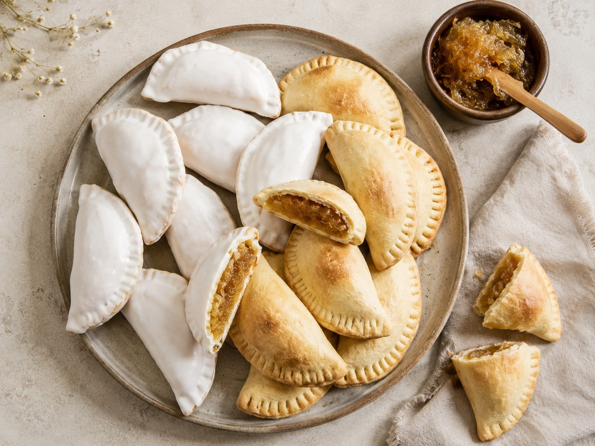
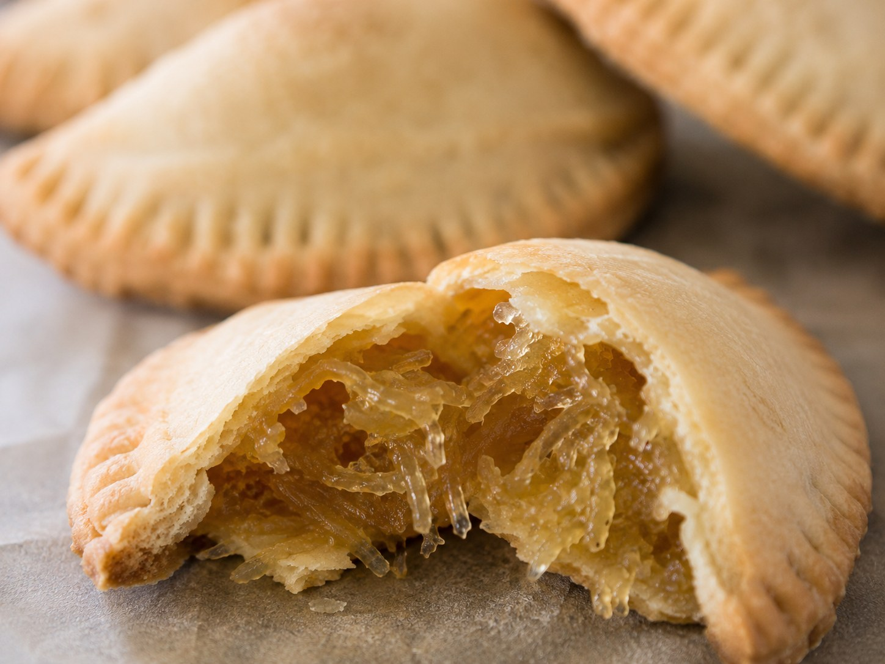
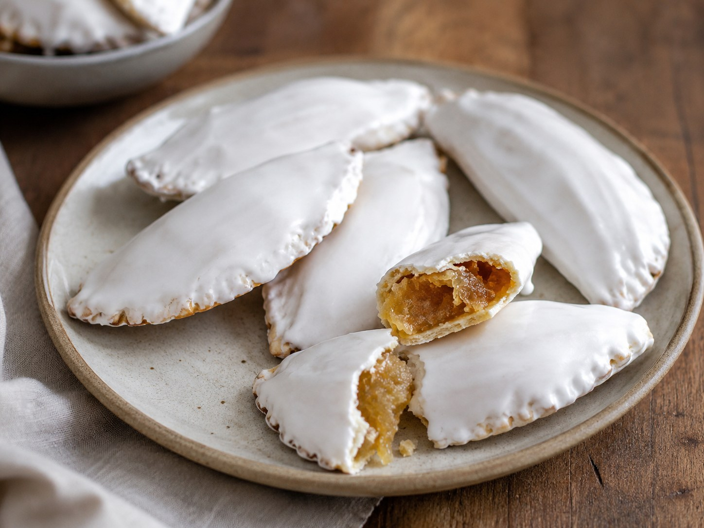
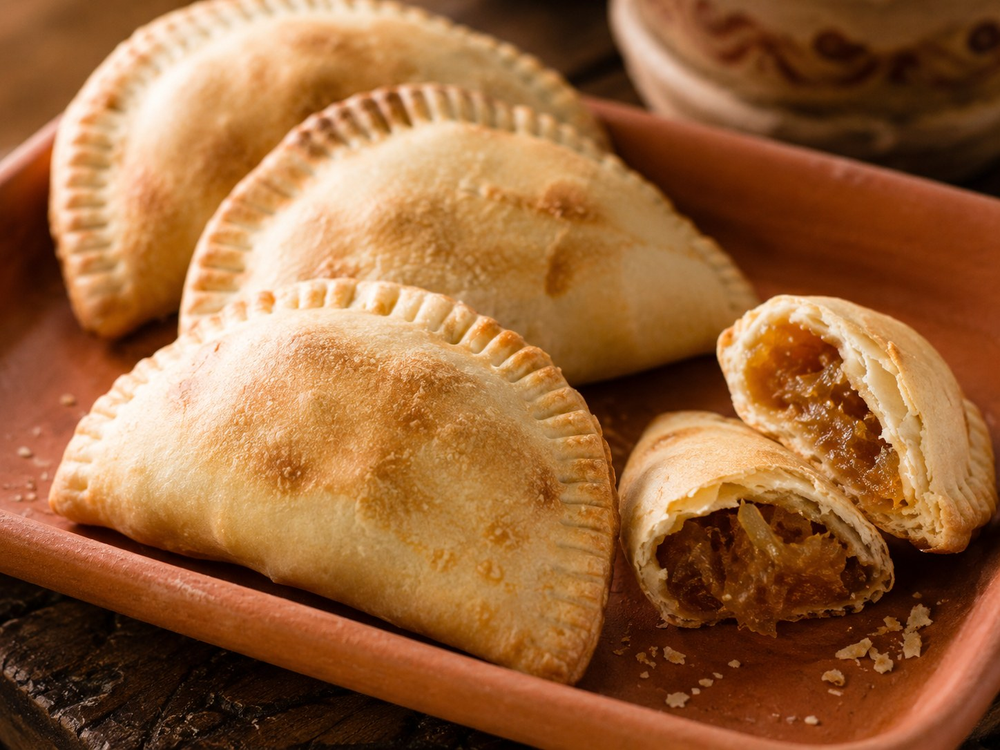

Empanadillas de cayote
Un dulce típico del norte argentino: masa suave, relleno de dulce de cayote y una cubierta blanca de glasé o blanqueo que se deja secar antes de servir.

Tradición de mesa familiar
Las empanadillas de cayote conectan a Misky Stack con los dulces de cocina familiar: masa sencilla, relleno regional y blanqueo artesanal. El cayote aporta identidad del norte y convierte una receta simple en un producto con historia.
Ingredientes
Masa
- 1 kg de harina 0000
- 150 g de manteca
- 1 huevo
- Agua hervida, cantidad necesaria
- Sal para preparar la salmuera
Relleno
- Dulce de cayote, cantidad necesaria
Blanqueo
- 3 claras
- 210 g de azúcar
- Agua, cantidad necesaria
- 1 chorrito de jugo de limón
Preparación
- Preparar una salmuera mezclando el agua hervida con sal.
- Formar una corona con la harina sobre la mesada.
- Colocar en el centro la manteca cortada en cubos pequeños, el huevo y la salmuera.
- Unir los ingredientes y amasar hasta lograr una masa homogénea.
- Dejar descansar la masa y reservar.
- Cuando la masa esté fría, estirarla y cortar discos para rellenar con dulce de cayote.
- Cerrar las empanadillas, sellar los bordes y llevar a horno fuerte durante 15 minutos, hasta que estén doradas.
- Para el blanqueo, mezclar las claras con el azúcar y el jugo de limón. Agregar agua solo si hace falta ajustar la textura.
- Cubrir las empanadillas con blanqueo o glasé real y dejar secar antes de servir.
Presentaciones


